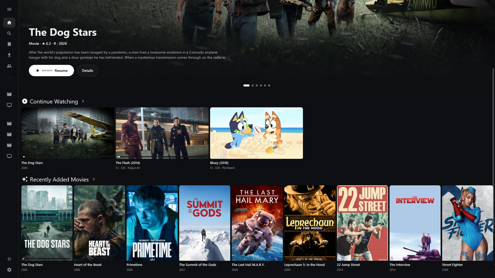
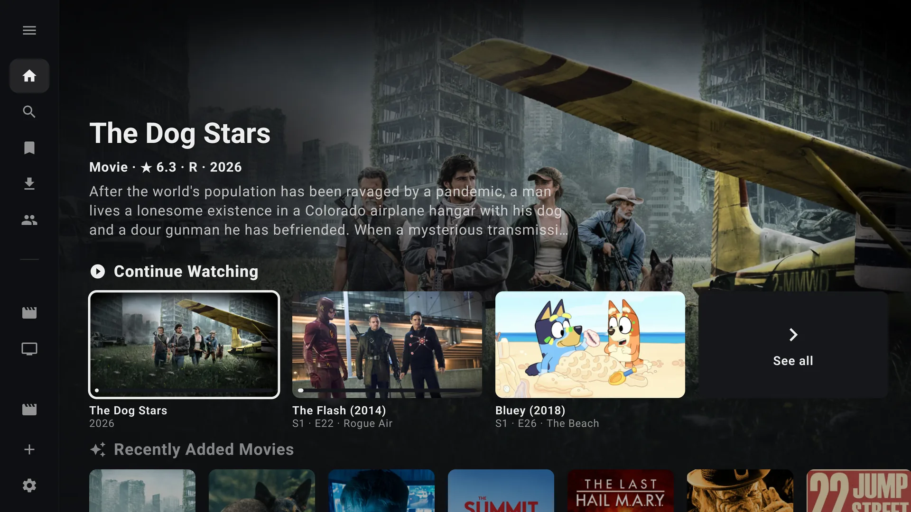
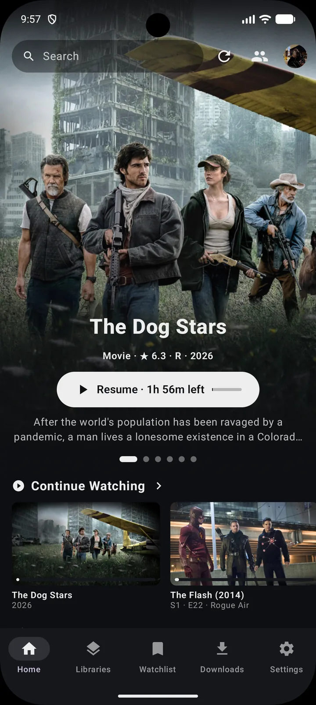

Plaivo plays your library at full quality: every format mpv can decode, HDR passthrough and hardware decoding. There's no browser engine inside, so it opens fast and stays light while you watch.
The picture comes first. Everything else stays out of its way.
Plays the original file
Plaivo direct-plays by default: mpv and FFmpeg decode the file on your device, so your server doesn't have to transcode. On a slow connection, pick a quality preset and the server transcodes for you.
Video
HEVC
AV1
VP9
H.264
MPEG-2
VC-1
Audio
TrueHD
DTS-HD MA
E-AC-3
FLAC
Opus
Subtitles
PGS
ASS
SRT
HDR passthrough
HDR video goes to an HDR display as it is, with hardware decoding on every platform.
WindowsDirect3D 11, d3d11va decoding
macOSMetal
AndroidExoPlayer, on HDR-capable devices
Plex and Jellyfin
Sign in to Plex, add Jellyfin servers, and browse every library in one sidebar.
PlexSign in with a PIN
JellyfinPassword or Quick Connect
Downloads
Take movies and whole seasons offline. Your progress syncs back once you're online again.
Season 2 · Episode 5
64%
Season 2 · Episode 4Downloaded
Watch Together
Watch in sync with friends from a room code. Rooms also work with Plezy, over the open openwatchparty protocol.
K7QF · 3 watching · In sync
Upscaling shaders
Anime4K, NVScaler and ArtCNN on desktop, set once as a default or per video from the player.
Anime4KFast and HQ, modes A, B and C
ArtCNNC4F16 and C4F32, with denoise options
NVScalerSkipped automatically on HDR video
Trakt and MyAnimeList
Scrobbles what you watch, including downloads watched offline. Anime is matched to the right MyAnimeList entry.
TraktLive scrobbling, or a watched mark at 90%
MyAnimeListEpisode progress once you've watched 90%
And the small things
Skip intro and credits
Up next countdown
Miniplayer while you browse
Subtitle size, colour and position
Language preferences synced to your account
Watchlist and search across servers
One Plaivo on every screen
The same sidebar, cards and player on the desktop, the TV and your phone.

shots/desktop-home.webp
Windows and macOSMouse, keyboard shortcuts, and a miniplayer so you can keep browsing.

shots/tv-home.webp
Android TVMade for the remote, with the focused title's backdrop filling the screen.

shots/phone-home.webp
AndroidTouch layout for phones and tablets.
Questions
Does Plaivo work with Jellyfin?
Yes. Add a Jellyfin server with its address, then sign in with your username and password or with Quick Connect. Plex and Jellyfin libraries show up side by side.
Which devices does it run on?
Windows, macOS 15 or later, Android phones and tablets, and Android TV.
What video player does Plaivo use?
mpv on Windows and macOS, and ExoPlayer on Android. Neither runs inside a browser.
Will my server have to transcode?
Not by default. Plaivo plays the original file and decodes it on your device. If your connection can't keep up, choose a lower quality and the server transcodes to it.
Can I watch without an internet connection?
Yes. Downloaded movies and episodes play offline, and the progress you make is sent to your server, and to Trakt or MyAnimeList, once you're back online.
Does Watch Together work with Plezy?
Yes. Both apps use the openwatchparty protocol, so Plaivo and Plezy users can share a room. Each person plays the title from a library they have access to.